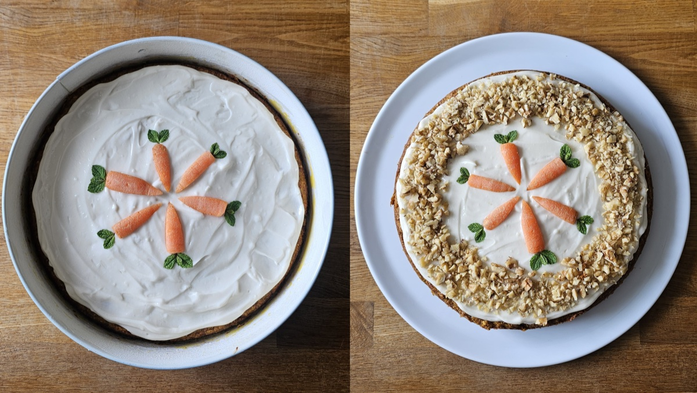

Carrot Cake
| Prep Time | Cook Time |  Servings Servings |
|---|---|---|
| 30 min | 35-40 min | 1 cake (25 cm ∅) |
Ingredients
Cake
- 375g carrots, finely grated
- 150g vegan butter, room temperature
- 150g sugar (or maple syrup)
- 1 pinch salt
- ½ tsp ground vanilla (or 2-3 tsp vanilla extract)
- 3 flax eggs (3 tbsp ground flaxseed + 9 tbsp hot water)
- 190g flour (all-purpose, spelt, or gluten-free)
- ¾ tsp cinnamon
- ½ sachet baking powder (Backpulver, ~8g)
- 150g ground almonds
- 1½ tsp apple cider vinegar
Cream Cheese Frosting
- 150g vegan cream cheese
- 80g powdered sugar
- a squeeze of lemon juice
- 1 pinch ground vanilla (optional)
Instructions
- Make the flax eggs: mix 3 tbsp ground flaxseed with 9 tbsp hot water and set aside 5-10 min to thicken.
- Preheat the oven to 180˚C (top and bottom heat). Grease a 25 cm round pan.
- Peel and finely grate the carrots.
- Beat the softened butter with sugar, salt and vanilla until creamy. Stir in the grated carrots and the flax eggs.
- Sift in the flour, cinnamon and baking powder. Add the ground almonds and apple cider vinegar. Combine until just mixed.
- Pour into the pan and bake on the middle rack for 35-40 min, until a skewer comes out clean.
- Let the cake rest in the pan for 10 min, then remove it from the pan and let it cool completely.
- For the frosting, mix the cream cheese, powdered sugar, lemon juice and vanilla with a hand mixer until creamy. Spread over the cooled cake.
- Decorate with marzipan carrots and chopped pistachios. Store refrigerated for 3-4 days.
